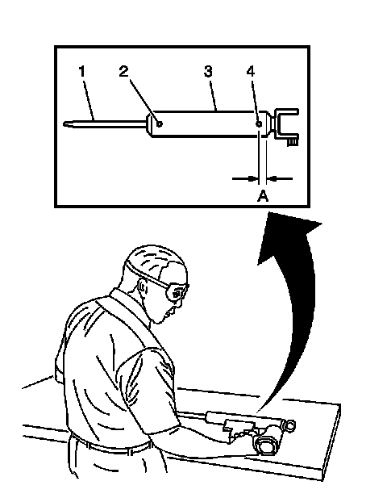

Shock Absorber Disposal
Shock Absorber Disposal
Caution: Gas charged shock absorbers contain high pressure gas. Do not attempt to cut the shock open before all gas pressure is released. Failure to do so may result in personal injury.
Caution: To prevent personal injury, wear safety glasses when centerpunching and drilling the shock absorber. Use care not to puncture the shock absorber tube with the centerpunch.

1. Make an indentation 50 mm (2 in) from the top (2) of the tube using a centerpunch.
2. Make an indentation 25 mm (1.0 in) from the bottom (4) of the tube (3) using a centerpunch.
3. Clamp the shock absorber in a vise horizontally with the shock absorber rod (1) completely extended.
4. Drill a hole in the shock absorber at the centerpunch (4) using a 5 mm (3/16 in) drill bit. Gas or a gas/oil mixture will exhaust when the drill bit penetrates the shock absorber. Use shop towels in order to contain the escaping oil.
5. Drill a second hole in the shock absorber at the centerpunch (2) using a 5 mm (3/16 in) drill bit. Oil will exhaust when the drill bit penetrates the shock absorber. Use shop towels in order to contain the escaping oil.
6. Remove the shock absorber from the vise. Hold the shock absorber over a drain pan horizontally with the holes down. Move the rod (1) in and out of the tube (3) to completely drain the oil from the shock absorber.